Insight
GovWren keeps a record of every request, decision, review, and change. This guide covers reading that record back as a whole: how the program is doing, in figures that say what they count.
This guide grows with each release. It covers the measures, the portfolio, and the unit report. The record dossier and the leadership report follow.
Governance, auditors, and administrators see everything in this guide. A steward sees the report for their own unit.
Measures#
Measures shows five figures about the program. Each one comes with the sentence that defines it and the cohort it counts, so that nobody has to guess what a number means.
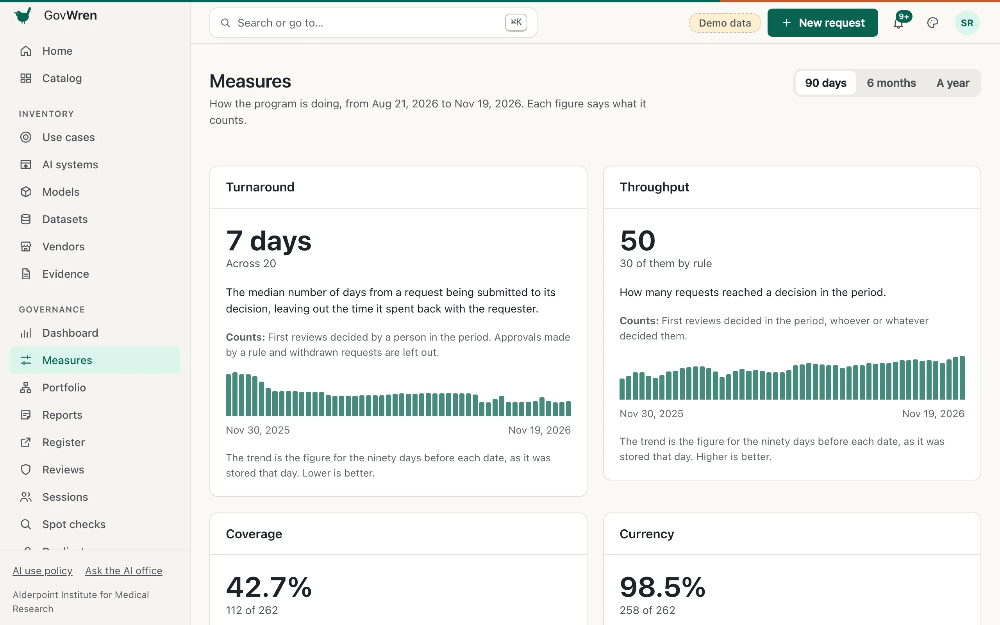
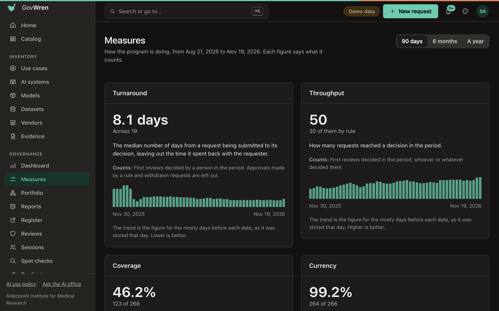
| Measure | What it is | What it counts |
|---|---|---|
| Turnaround | The median number of days from a request being submitted to its decision, leaving out the time it spent back with the requester | First reviews decided by a person in the period. Approvals made by a rule and withdrawn requests are left out |
| Throughput | How many requests reached a decision in the period | First reviews decided in the period, whoever or whatever decided them |
| Coverage | The share of uses in the inventory that an owner has confirmed in the twelve months to the end of the period | Use cases that are approved, lapsed, or suspended. A use counts if an owner answered an attestation campaign about it |
| Currency | The share of uses in the inventory whose approval is in force at the end of the period | Use cases that are approved, lapsed, or suspended. A use counts if it is approved and its approval has not passed its end date |
| Completeness | How complete the records of uses in the inventory are, on average | Use cases that are approved, lapsed, or suspended, each scored by the share of expected fields that are filled in |
Choose the period#
The page shows the last ninety days. Choose six months or a year at the top. Turnaround and throughput count what was decided in the period. Coverage, currency, and completeness describe the inventory as it stands at the end of it.
Read a trend#
Under each figure is its trend. Once a day GovWren stores each measure as it stands, over the ninety days to that date. The trend is those stored values, oldest first.
A stored value is not recomputed. What a measure said last March is what was stored last March, even if records have since been corrected. The job that stores them is listed under Scheduled work.
Use a measure well#
- A falling turnaround is good only if throughput holds. Read them together.
- Coverage rises when an attestation campaign runs, and falls as the twelve months pass.
- Currency falls when approvals lapse. The list of lapsed uses is one filter away under Use cases.
The same figures are available from the API at GET /api/v1/measures, with from and to.
The portfolio#
Portfolio shows the uses in the inventory grouped one way at a time. Choose how at the top:
| Group by | Shows |
|---|---|
| Unit | Each unit that has uses of its own |
| Tier | Minimal, moderate, high, and critical |
| Area | The area of work each use belongs to |
| Data class | The most sensitive class of data each use involves |
| Supplier | The vendors of the tools each use relies on |
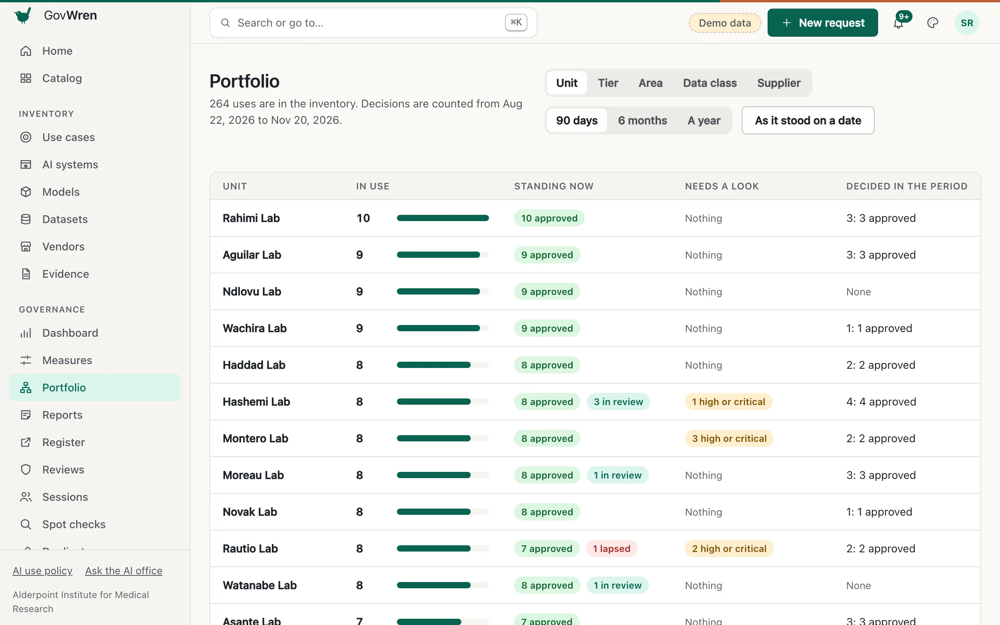
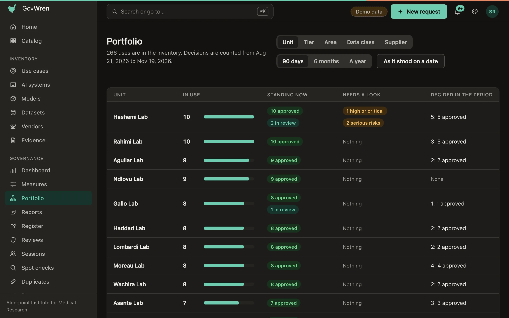
For each group the table shows:
- In use: how many of its uses are in the inventory, approved, lapsed, or suspended.
- Standing now: how those uses stand today, and how many more are in review.
- Needs a look: how many are at the high or critical tier, and how many serious risks are open on them.
- Decided in the period: how many decisions were made for the group in the period chosen, and how they went.
Each name opens the list of uses it counts, so no figure has to be taken on trust. A supplier's name opens the supplier.
A use that relies on tools from two suppliers is counted under both. Under every other grouping each use is counted once.
Standing is always as of today. Only the last column changes with the period.
The unit report#
A unit report puts one unit on a page: the unit and every unit beneath it.
Stewards open theirs with My unit. Governance, auditors, and administrators can open the report for any unit.
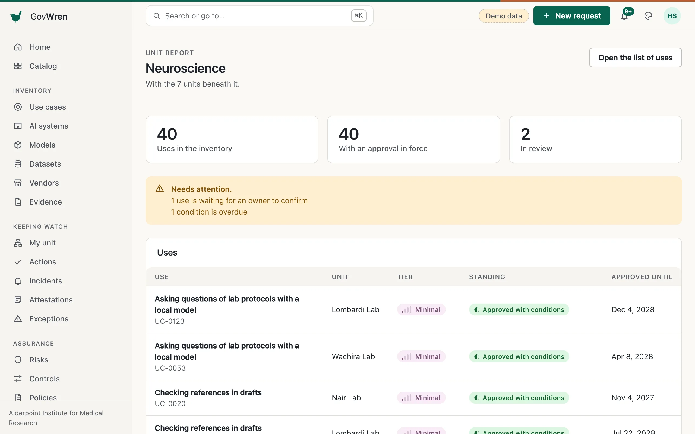
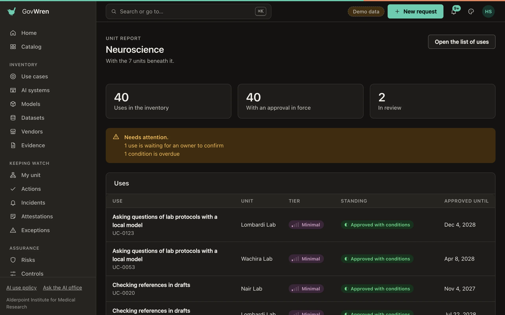
It shows:
- How many uses the unit has in the inventory, how many have an approval in force, and how many are in review.
- What needs attention: uses waiting for an owner to confirm, overdue conditions, approvals that end within sixty days, approvals that have lapsed, and open incidents.
- Every use, with its unit, tier, standing, and the date its approval ends.
- Exceptions asked for or in force, and open incidents that involve a use in the unit.
It is the page to open before a meeting with a head of unit, and the page a steward checks before attesting that their list is complete.
Reports to leadership#
A report sets down how the program stood over a period, and then never changes. Next year it will read exactly as it did on the day it was made, whatever has happened to the records since.
Governance, auditors, and administrators find them under Reports.
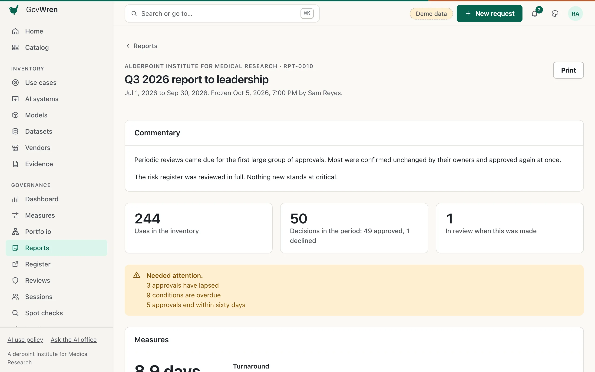
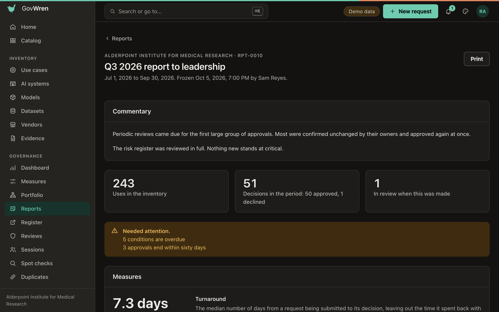
Make a report#
Governance makes reports.
- Open Reports and choose Make a report.
- Check the title and the period. They start as the quarter that ended most recently.
- Add a few sentences of commentary if you want them at the top. This is optional.
- Choose Make and freeze it.
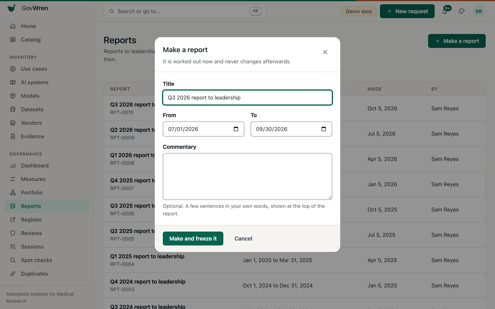
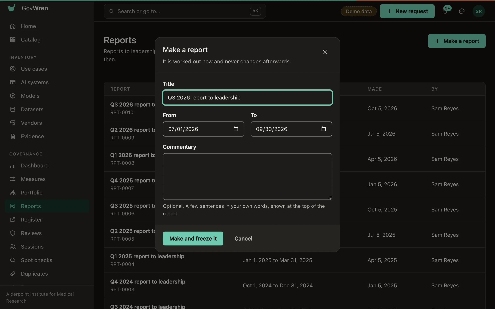
GovWren works the report out there and then and stores it whole. There is nothing to edit afterwards and no way to make it again under the same reference. If something was wrong, make a new report; both are kept.
What a report holds#
| Part | What it shows |
|---|---|
| Headline counts | Uses in the inventory, decisions made in the period, and requests in review when the report was made |
| What needed attention | Approvals lapsed or suspended, overdue conditions, and approvals ending within sixty days |
| Measures | Each measure over the period, with its definition |
| By tier and by unit | The portfolio as it stood, for every tier and for the twelve units with the most uses |
| Risks | How many stood at each level, and those at high or critical with their owners |
| Incidents, exceptions, and controls | Incidents reported in the period, exceptions in force, and how the program's controls stood |
Decisions and incidents are counted over the period. Everything else is as it stood at the moment the report was made, so make a quarter's report soon after the quarter ends.
How to know it has not changed#
Each report is stored with the SHA-256 of its contents, shown at the foot of the page. Each time a report is opened, GovWren recomputes the hash. If what is stored no longer matches, the page says so at the top. Making a report is also written to the history with that hash.
Print gives the report without the menus, for a board pack or a PDF.
As it stood on a date#
"What did we know about this in June?" is a question GovWren can answer for any day, because the history holds every change as the value before and the value after. Nothing extra is stored; the state on a day is worked out from the history when you ask.
A day means the end of that day: everything recorded on it counts.
One record#
Open a record you can see in full, choose History, then See it as it stood on a date. Pick the day and choose Show.
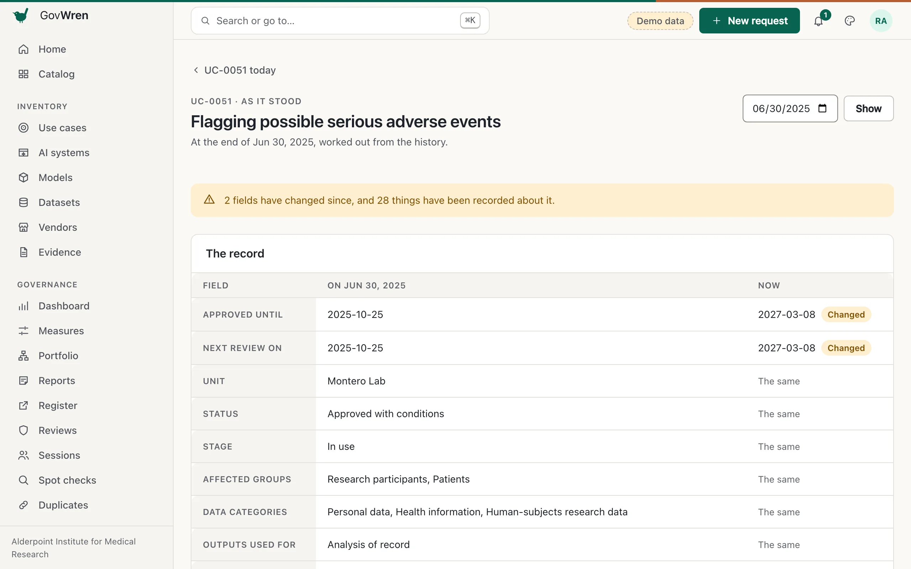
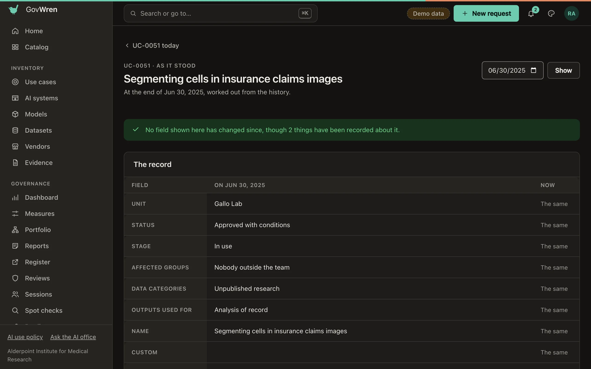
The page shows:
- Each field as it was then, beside how it is now. Fields that have changed since come first and are marked.
- Who owned it then, what it relied on, and the conditions that had been set, with how each stood.
- How many things have been recorded about it since.
If the record had not been added by that day, the page says so and gives the day it was added.
The inventory#
Governance, auditors, and administrators open Portfolio, then As it stood on a date.
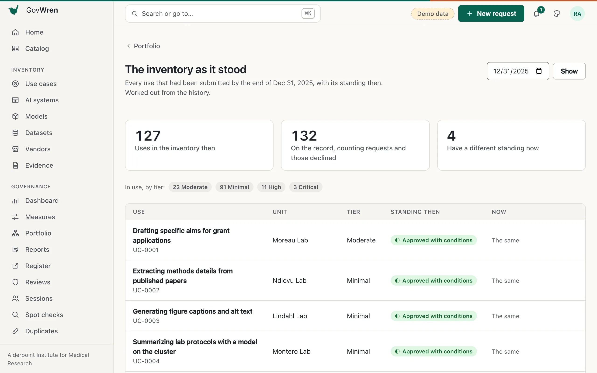
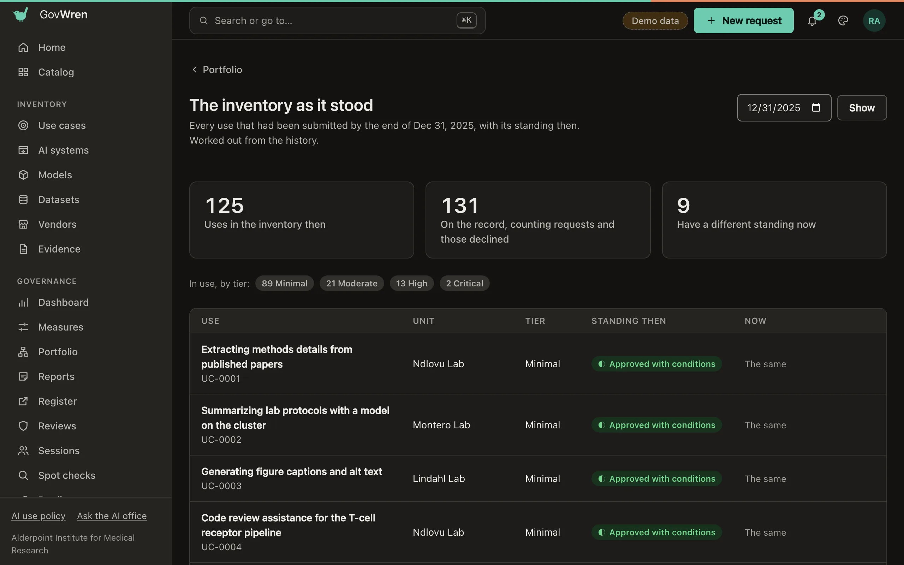
It lists every use that had been submitted by the end of that day, with its unit, tier, and standing as they were, and says where the standing is different now. Each name opens that record as it stood on the same day.
This is the page for an audit that asks what was approved on a particular date. For a record of how the whole program stood at the end of a period, with the figures that go with it, make a report at the time.
The dossier#
A dossier is everything the record holds about one thing, in one place. Open any record you can see in full and choose Dossier.
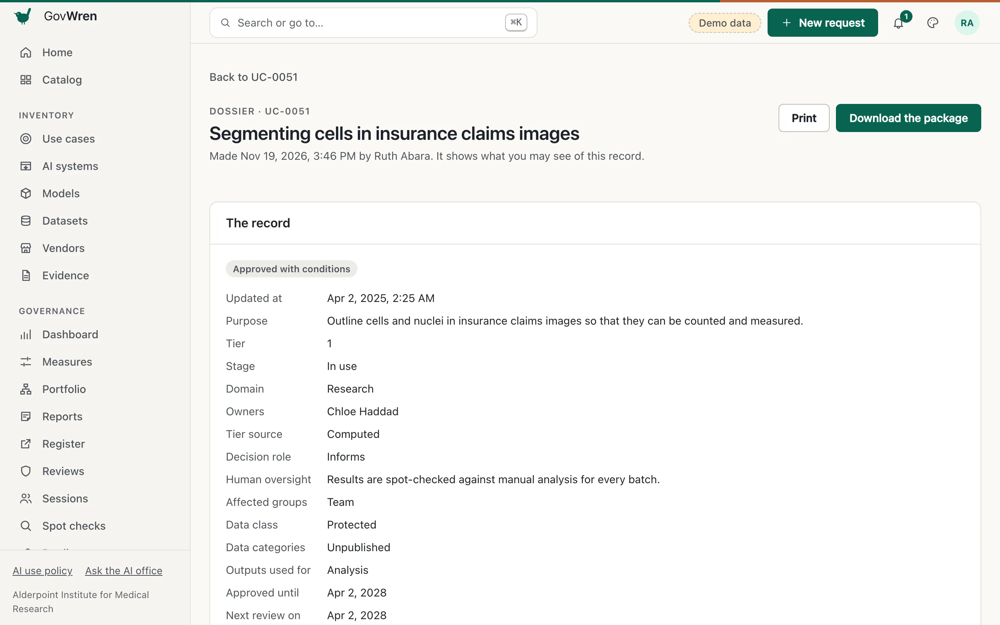
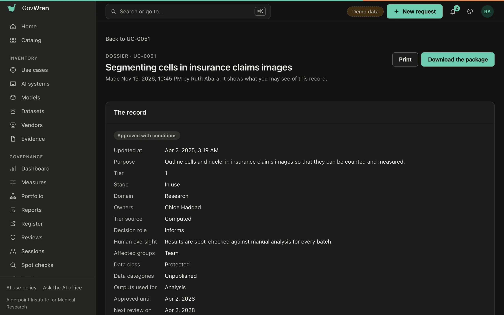
It holds, in order:
- The record as it stands.
- For a use case, the answers given on the request form, with the version of the form.
- Every review, with each review function's finding, and every decision with its reason.
- Conditions, findings of its own and inherited, risks, the controls that apply, exceptions, incidents, and assessments.
- What it is connected to, and its evidence, with the SHA-256 of each file.
- Its history, oldest first.
A dossier shows what the person who made it may see. A requester's dossier leaves out what reviewers said among themselves, exactly as the record's own pages do.
Print it#
Print sends the page to your printer, or to a PDF, without the menus.
Take the package#
Download the package gives a zip to hand to an auditor. It contains:
| File | What it is |
|---|---|
dossier.html | The dossier as one page that opens in any browser, with nothing else needed |
dossier.json | The same content as data |
evidence/ | Each evidence file, named by its reference |
manifest.json | Every file with its SHA-256 and size, and the event the history ended at when the package was made |
From the command line, govwren dossier make UC-0042 writes the same package with everything in it.
Check a package#
Anyone holding a package can check that it is whole. This needs GovWren installed, but no installation of it:
uv run govwren dossier verify UC-0042-dossier.zipIt recomputes the SHA-256 of every file and compares it with the manifest. It exits with 1 and names the file if one was altered, added, or removed, or if the manifest itself was changed.
To also check that the package came from your installation, add --history. GovWren then looks up the event the manifest names in its own history and compares the hash:
uv run govwren dossier verify UC-0042-dossier.zip --historyIf an evidence file was not in the file store when the package was made, the manifest lists it as missing and the check says so.
Open formats#
Two exports put the models in forms other tools read.
The bill of materials#
Open Models and choose Bill of materials. You get models.cdx.json, a CycloneDX 1.6 document:
- Each model is a machine-learning component with its version, supplier, license, the SHA-256 of its weights if one is recorded, and its model card.
- Each dataset a model was trained or evaluated on is a data component.
- The dependencies say which datasets a model rests on and which model it was derived from.
It holds the models you may see in full. Security and procurement tools that read CycloneDX can load it as it is.
A model card#
Open a model and choose Model card. You get a Markdown file with the usual headings: model details, intended use, out-of-scope use, training data, evaluation, known limitations, and how the model may be used here. A heading with nothing recorded under it is left out.
The transparency register#
The register is the set of approved uses your organization has chosen to describe in public, or to everyone inside it. GovWren writes it as plain pages with no script, for any web server.
Nothing is published by GovWren itself. You choose the uses, write the words, and put the pages where you want them read.
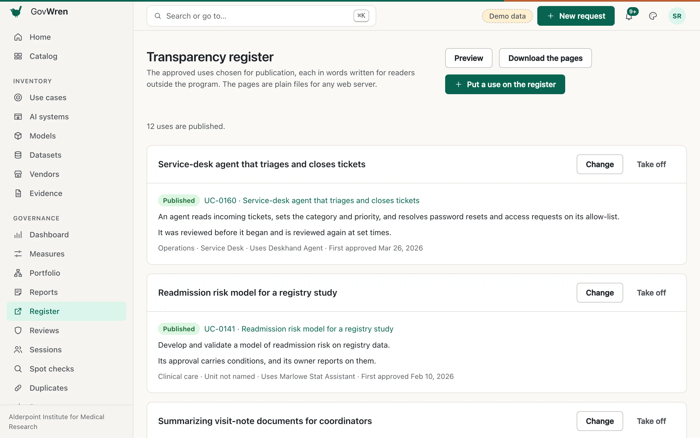
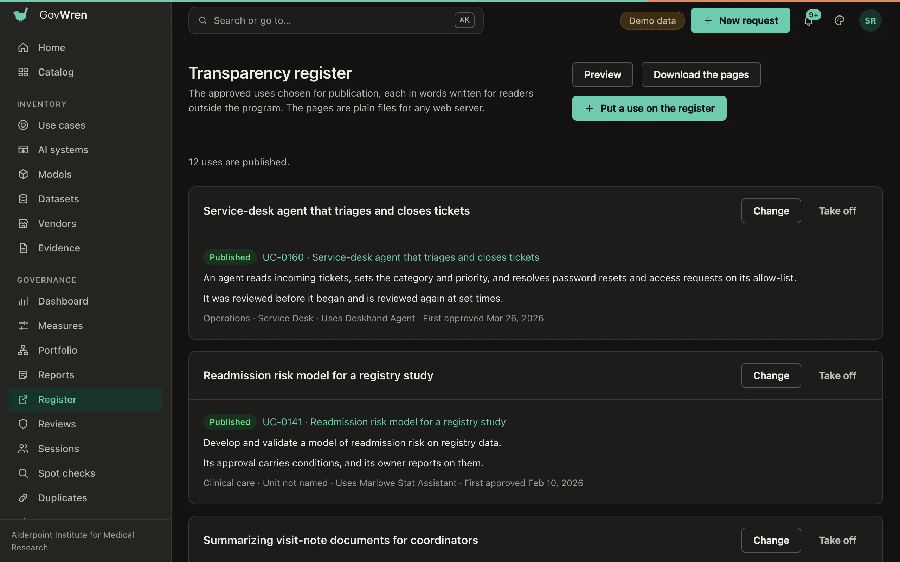
Put a use on the register#
Governance does this.
- Open Register and choose Put a use on the register.
- Give the reference of the use case. It must have an approval in force.
- Write a title and a description for a reader who knows nothing of the program: what the AI does, for whom, and what a person still decides.
- Untick Name the unit if the page should not say which unit it is.
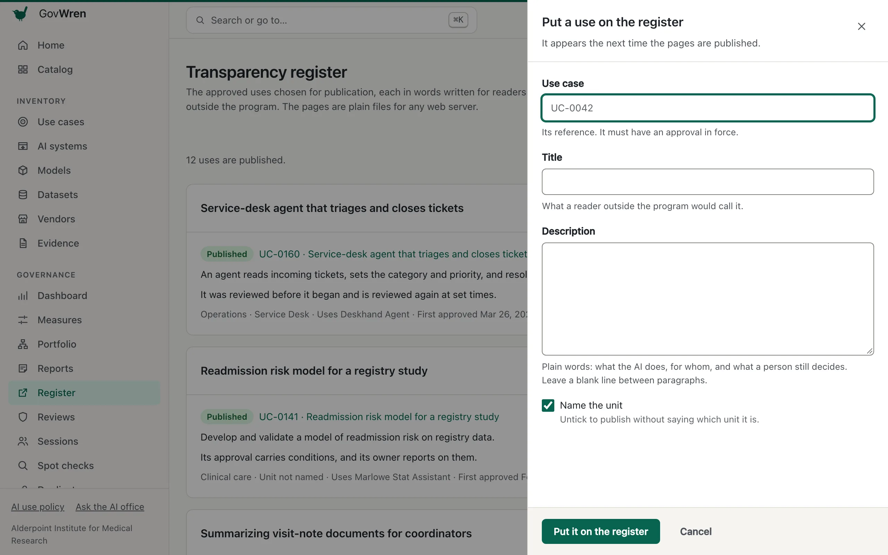
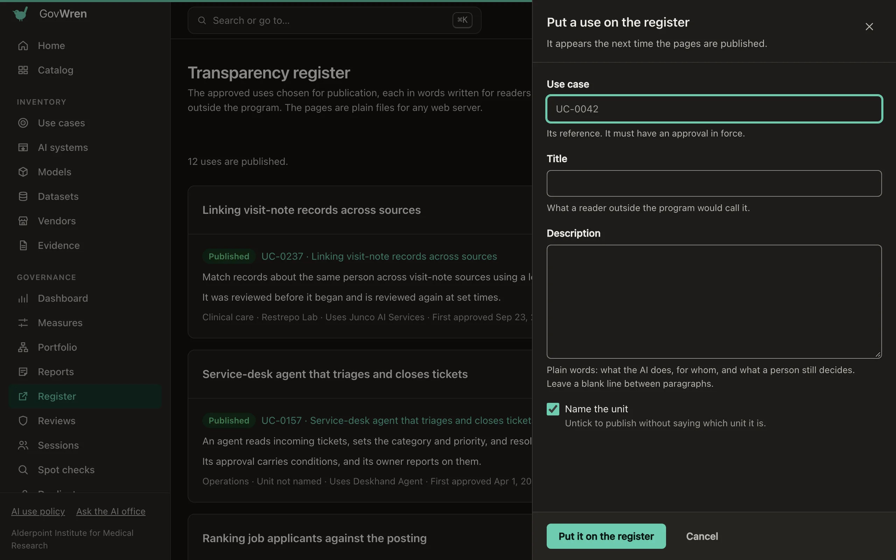
Change rewords an entry. Take off removes it; the use case itself is not touched.
What a published page shows#
| Shown | Where it comes from |
|---|---|
| Title and description | The words you wrote for the register |
| Area of work, unit, and AI tools used | The record |
| How people stay in charge | The record's answer on human oversight |
| First approved and last reviewed | The decisions on the record |
Nothing else from the record is published: no owners, no data classes, no findings, no conditions.
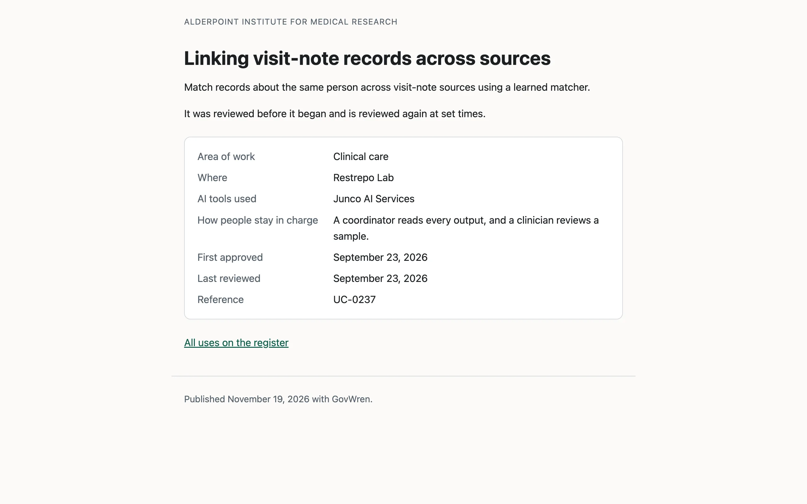
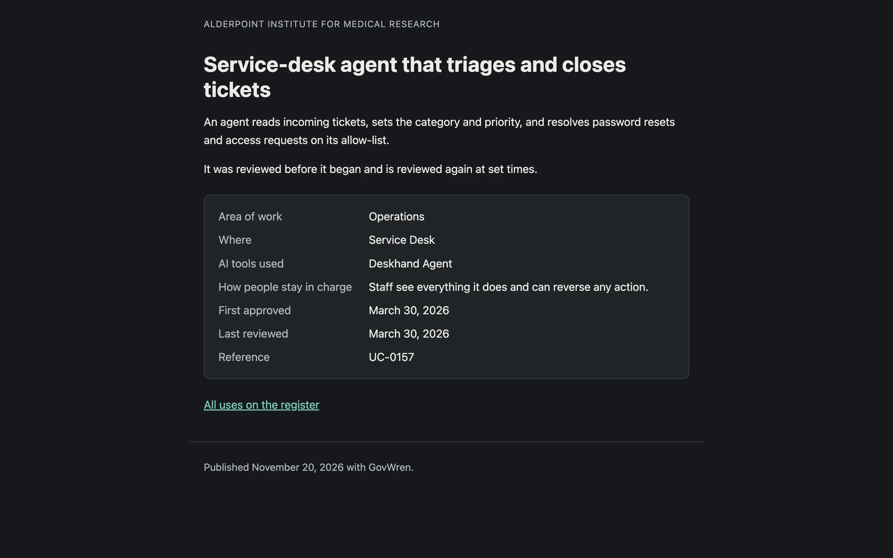
If an approval lapses, is suspended, or the use is retired, its entry is held back: it stays on your list and is left out of the pages until the approval is in force again.
Publish the pages#
Preview opens the pages as they would be published. Download the pages gives them as a zip to hand to whoever runs your website.
To keep a published copy current without anyone doing it by hand, run this on a schedule on the server:
uv run govwren register build --out /var/www/ai-registerIt writes the index, one page for each published use, and a stylesheet, and removes pages for uses no longer on the register.